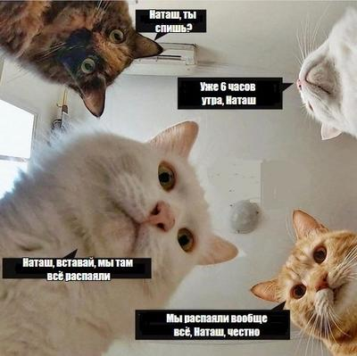
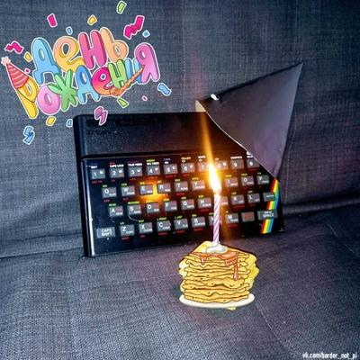
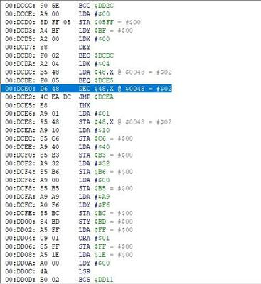

Мини-клавиатура для Кворума
Спаял свою замену для убитой клавиатуры "Кворума". Работает!
Дальше сделаю ей корпус, выносной шлейф, и попробую уже поиграть во что-нибудь.

Спаял свою замену для убитой клавиатуры "Кворума". Работает!
Дальше сделаю ей корпус, выносной шлейф, и попробую уже поиграть во что-нибудь.
Кто слышал, это правда? А что делать тем, у кого движок маску не поддерживает?

Прочитал этот пост vinxru и не смог удержаться и не приплести котов с Наташей
https://vk.com/border_not_pi?w=wall38437349_7942
А так у меня у самого тоже мини-месторождение электронных компонентов в виде пары больших коробок плат лежит. Надо тоже распаять когда-нибудь. Хоть появится место под новое железо.
Знаменитый девайс от знаменитого спектрумиста Kakos Nonos теперь и по центральным каналам рекламируют!
Так-так, кому там вчера стукнуло 38? Вот тебе карантинный тортик, дружище! (И немного вырвиглазных мэдскиллзов)
Ведь именно 23 апреля 1982-го ZX Spectrum поступил в продажу 🎉
https://vk.com/wall-168374125_405
Продолжая тему внешних звуковых чипов для Famicom. Вот эта красота - это наш родимый AY-3-8912. Правда, в ZX Spectrum он тактируется частотой 1.78 Mhz. Здесь же, хотя сам процессор приставки работает на тех же 1.78 MHz, AY тактируется половиной от этой частоты. Собственно, исключительно делением клока пополам и занимается один из трех напаянных "мертвых тараканов" - триггер 7474. Но вот если добавить переключатель, то можно сделать картридж, в котором одним щелчком AY можно перевести в точно такой же режим, как в Спектруме.
Даже напрашивается идея для первоапрельской ретрохайтек-шутки - сделать картридж для Денди, который будет играть спектрумские pt3 музоны.
https://vk.com/wall-29534144_13135139
Приятный чип-тюн альбом. Правда, это немного чит-тюн 😑 Используется маппер Konami VRC6, у которого на борту два дополнительных канала прямоугольников и, главное, канал пилы, которого в Фамикоме изначально не было.
Читерский чип-тюн это ещё и потому, что чтоб послушать на реальном железе, придется найти где-то картридж с VRC6 (третья кастла, например), и перепаять в нем ПЗУ, что немного варварство.
Легонько хакнул ром Mario Bros на вечные жизни.
Мы немножко с дочерью-трехлеткой играем в игры для Денди на эмуляторе. И обычно это не очень продуктивно, так как она сливает за минуту. Так что читы - наше всё. Но для Mario Bros читы почему-то не гуглятся, пришлось сделать свой. В итоге залипли на часок, дошли до 25-го уровня.
Скачать

Та самая команда на уменьшение количества жизней, которую нужно убрать, заменив на NOP; NOP; (0xEA 0xEA)
ESP8266 ZX Spectrum Emulator
Вроде ничего особенного, мало ли уже всякого на ESP8266 наделано. Но тут такая кошмарная схема, она прямо как побитый голодный котенок в подъезде, забившийся в угол и с надеждой заглядывающий в глаза прохожим. Просто нельзя пройти мимо, хочется взять и перерисовать. Ну а потом, наверное, и собрать, благо лежит пара таких экранов и с десяток ESP-12. Взялся, в общем.

Этот Next вышел, несите следующий!
Создатели только что окончательного вышедшего ZX Spectrum Next анонсировали новую кампанию на Кикстертере в ближайшем будущем. Тем временем на Ebay уже вовсю продают новинку по двукратной стоимости. Есть предложения и по трехкратной - желающих купить, впрочем, пока нет.
Я четыре года, прошедших со времен первого кикстартера, откладывал с завтраков и мороженного, и если цена в новой кампании вырастет не очень сильно (а исходно он стоил всего £175), то, пожалуй, даже и закажу.
{kind=link}
{kind=link}
{kind=link}